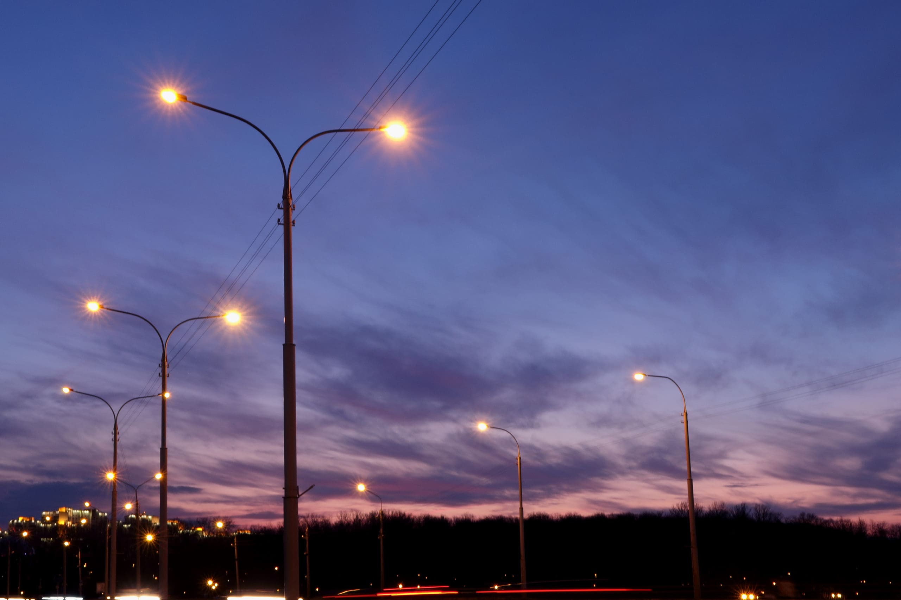
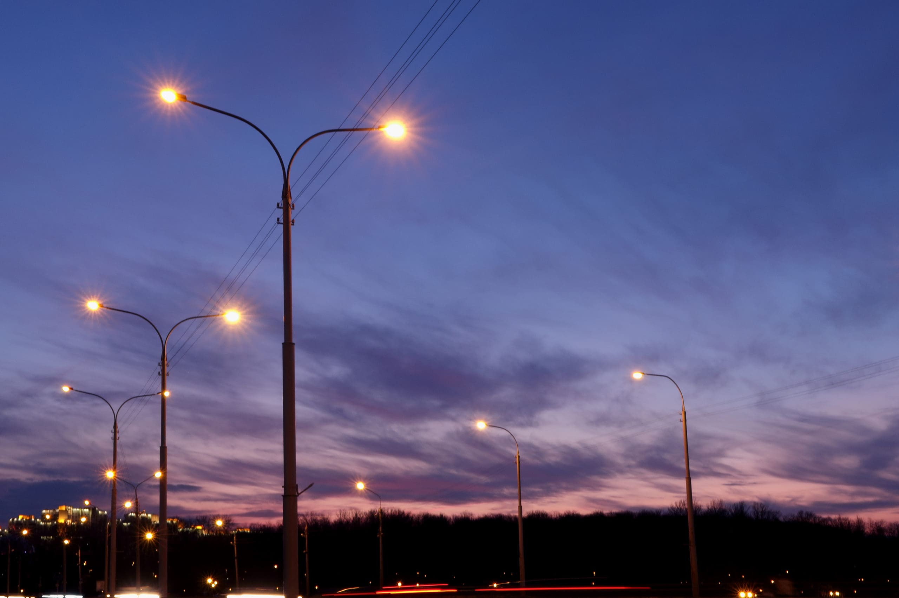

Street Light Management - NAGAM
 

Nagam is responsible for the installation, maintenance, and operation of street lighting across the city. Ensuring well-lit roads and public spaces is crucial for safety and security.
The department ensures street lights function correctly, responds to complaints, and upgrades to energy-efficient lighting solutions...
The department ensures that street lights function properly to provide safe and well-lit environments for citizens. Regular maintenance checks and timely response to complaints help in keeping the streets illuminated.
In addition to installing new streetlights, Nagam actively maintains existing infrastructure to reduce dark spots in the city. They frequently inspect malfunctioning lights and respond to public complaints promptly.
Moreover, the department is working on modernizing streetlights by transitioning to LED technology, which not only improves brightness but also reduces energy consumption significantly. This initiative contributes to environmental sustainability and cost-effectiveness.
Regular inspections and timely repairs are part of their commitment to keeping public spaces illuminated, ensuring better visibility for pedestrians and motorists, and reducing crime rates in poorly lit areas.